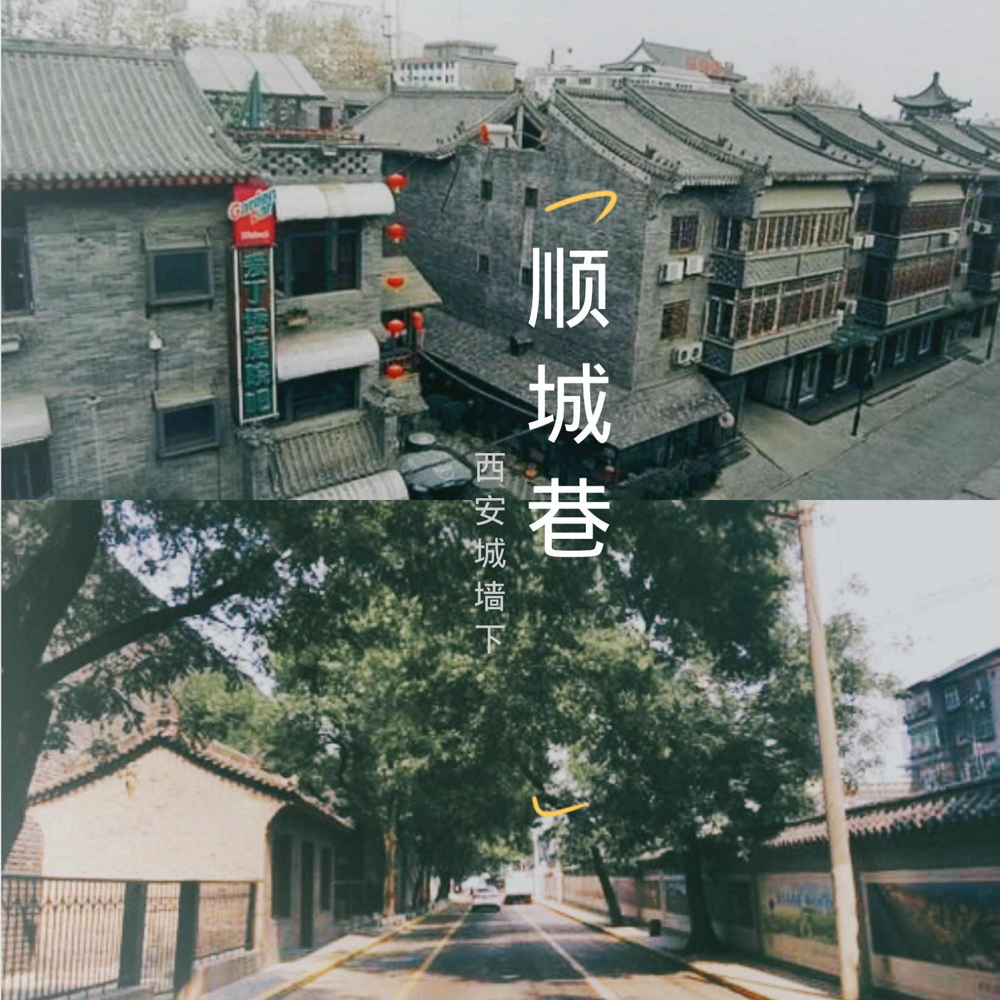
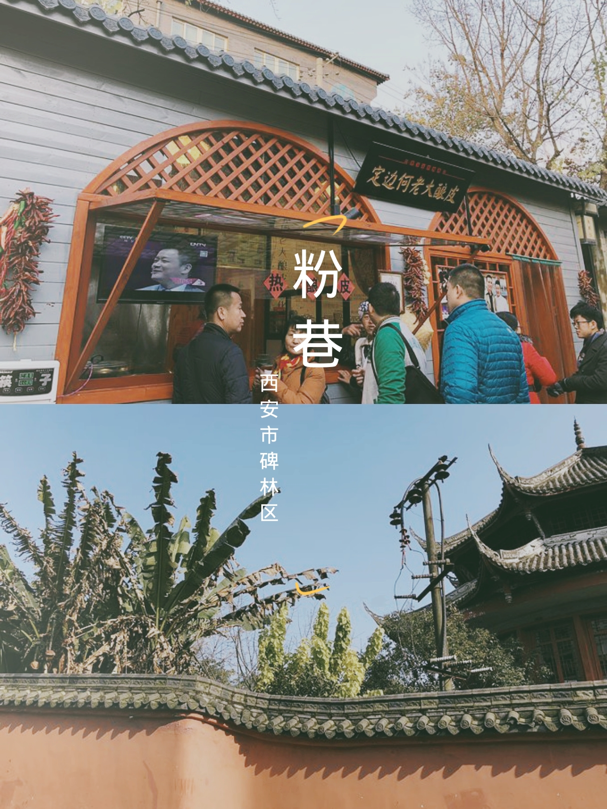
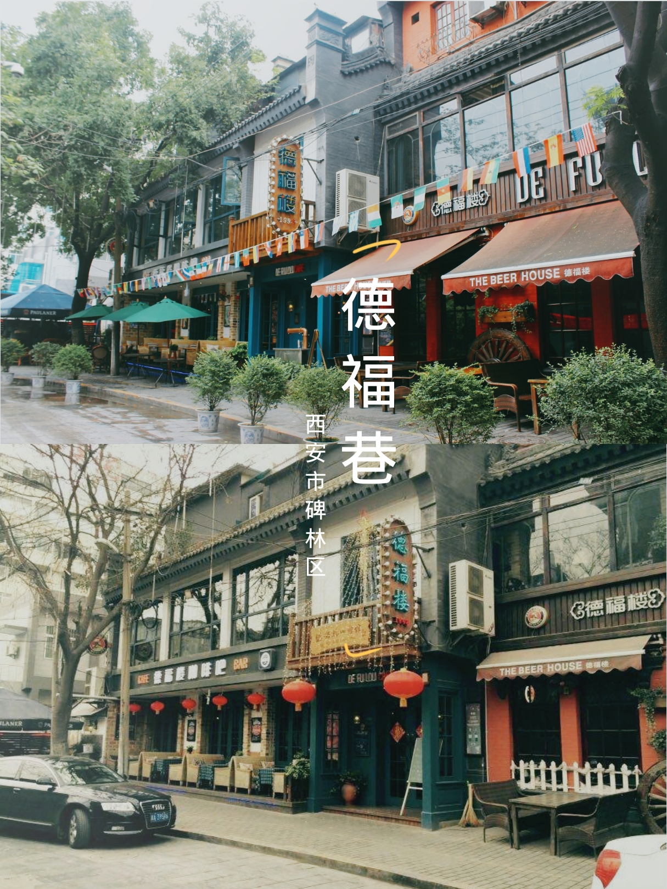

几乎每一座城市的过往
都藏在一条条小巷里
或者一个个旧旧的庭院里
当然也少不了躺在喧嚣都市中的老街
西安是一个文化底蕴深厚的城市
随意走在这座千年古城的街头巷尾
都能感受到一股浓郁的古文化气息
西安的每条巷子都有它独特的韵味
让我们一起来品位吧
关于古城
老巷的故事

城墙下的生活
西安的顺城巷，巷若其名，是一段在城墙内侧顺墙而成的街巷，一侧是巍巍古城墙，一侧是秀丽端庄的明清古建，
小巷虽没有新建大道的宽阔华丽，却因它的存在，使得原本因墙而隔断的围城内与外，城垛与飞檐不觉间浑然一体。
城墙不再孤独，院落不再断续。在这青石小径的巷子里，集中了风格迥异的青旅、食店、酒吧、咖啡屋，更有一些秦腔或相声曲艺社，院门半掩静待听客到访。
看够了大风景，在城市高楼的间隙里，沿着城墙根，深入到城市的小脉络当中，或许更能了解西安这座城市。
旅游攻略
地址：西安市碑林区南门
交通：乘坐公交600、616路在南门站下。
关于粉巷
有人说以前粉巷是西安城的粮食一条街。据说街道上撒满厚厚的粉面，由此得名。
还有的人说是粉巷是以卖胭脂得名，也就是现在的化妆品一条街，离的很远就能闻到浓浓的胭脂味道。
最后一种是说粉巷是当初皇上选妃子的街道，因为西安是当年的国都，每年都粉巷住满了进城等待被选的妃子，她们的身上有好闻的胭脂粉味道。

旅游攻略
地址：西安市碑林区南门
交通：乘501路、706路、707路到“粉巷”站

德福巷的前世今生
德福巷，在隋唐时期曾经为皇城的一部分，现在是西安市内有名的酒吧一条街。
德福巷原来是一片老房区，20世纪90年代逐渐成为休闲文化街。巷口立着雄伟壮观的三门石碑坊，
大块青石铺就的小路两旁,仿古建筑错落有致。
不到200米长的街道上， 一家接一家地开满了大大小小的咖啡屋、酒吧、茶馆，名字都起得都颇有些情调。
如今，德福巷与古色古香的书院门古文化街东西为照，遥相呼应，成了传统文化区中一条最有“洋味”的街道。
旅游攻略
地址：西安市碑林区南门湘子庙街北侧
交通：乘坐公交600、608、46路在钟楼站下。